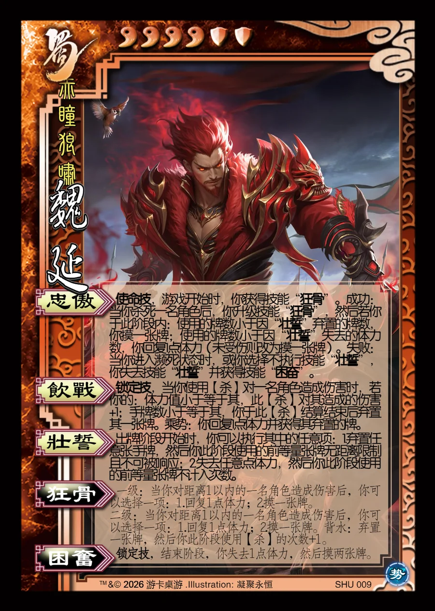

点击卡面查看大图
蜀
势魏延
♥4 ⛨2赤瞳狼啸
忠傲使命技
使命技，游戏开始时，你获得技能“狂骨”。成功：当你杀死一名角色后，你升级技能“狂骨”，然后若你于此阶段内：使用的牌数小于因“壮誓”弃置的牌数，你摸一张牌；使用的牌数小于因“壮誓”失去的体力数，你回复1点体力（未受伤则改为摸一张牌）。失败：当你进入濒死状态时，或你选择不执行技能“壮誓”，你失去技能“壮誓”并获得技能“困奋”。
饮战锁定技
锁定技，当你使用【杀】对一名角色造成伤害时，若你的：体力值小于等于其，此【杀】对其造成的伤害+1；手牌数小于等于其，你于此【杀】结算结束后弃置其一张牌。乘势：你回复1点体力并获得其弃置的牌。
壮誓
出牌阶段开始时，你可以执行其中的任意项：1.弃置任意张手牌，然后你此阶段使用的前等量张牌无距离限制且不可被响应；2.失去任意点体力，然后你此阶段使用的前等量张牌不计入次数。
狂骨衍生
一级：当你对距离1以内的一名角色造成伤害后，你可以选择一项：1.回复1点体力；2.摸一张牌。
二级：当你对距离1以内的一名角色造成伤害后，你可以选择一项：1.回复1点体力；2.摸一张牌。背水：弃置一张牌，然后你此阶段使用【杀】的次数+1。
困奋锁定技衍生
锁定技，结束阶段，你失去1点体力，然后摸两张牌。